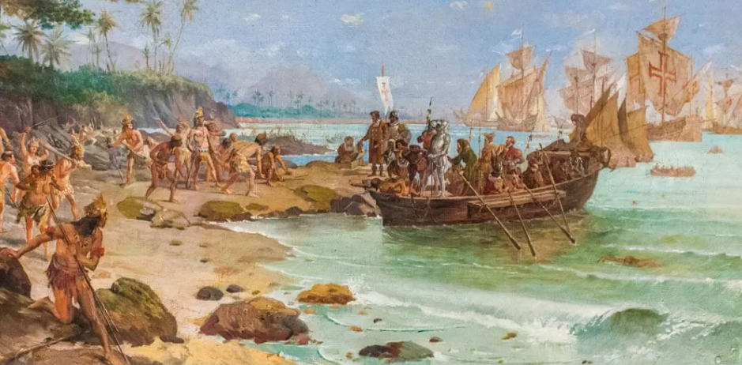

Vous souhaitez partir en voyage au Brésil et vous ne savez pas par où commencer ?
sujet s'adresse à tous ceux qui veulent en savoir plus sur le pays et sa culture
Le Brésil est le pays le plus vaste et le plus peuplé d’Amérique latine
C'est également le cinquième pays du monde par la superficie et par le nombre d’habitants : le Brésil couvre la moitié du territoire de l’Amérique du Sud et il en regroupe plus de la moitié des habitants
Il partage des frontières avec tous les pays d’Amérique du Sud à l’exception du Chili et de l'Équateur et la langue nationale est le portugais.

| Frango com quiabo |
Leitão à pururuca |
Galinhada com pequi |
Virado à paulista |
|
|
|
|
|
| Picadinho de carne |
Feijoada |
Arroz carreteiro |
Acarajé |
|
|

|
|

|
La gastronomie brésilienne est un savant mélange d'influences diverses et de produits locaux comme importés par les colons européens
Les colons portugais à leur arrivée au Brésil ont influencé la cuisine en adaptant leurs propres plats à l'aide des ingrédients indigènes.

Le Parlement brésilien est composé de deux Chambres : le Sénat (Senado Federal) et la Chambre des députés (Câmara dos Deputados).
Au Sénat siègent 81 élus (3 sénateurs par État et 3 sénateurs pour le district fédéral) et 513 à la Chambre des députés renouvelée tous les quatre ans.
Ce sont deux candidats radicalement opposés qui s’affrontent lors du premier tour de l’élection présidentielle brésilienne, dimanche 2 octobre. D’un côté, le président sortant d’extrême droite, Jair Bolsonaro, qui fait campagne sur la sécurité et la foi. De l’autre, l’ancien président et leader de la gauche, Luiz Inacio Lula da Silva, dit « Lula », au programme économique et social.
Si certains sondages donnent Lula gagnant dès le premier tour, rien n’est pourtant joué.
Dans quelle mesure les Brésiliens vont-ils sanctionner le mandat de Jair Bolsonaro ? Ou, au contraire, maintenir le bolsonarisme comme une force politique majeure ?
Le pays risque-t-il un coup d’Etat si le président sortant ne reconnaît pas son éventuelle défaite ?


Contrairement aux Incas et aux Mayas, les Indiens ont laissé très peu de traces de leur vie au Brésil. Les historiens peuvent seulement se baser sur des estimations. Ainsi, ils pensent que les Indiens étaient entre 2 et 4 millions à habiter sur ces terres.
En 1500, les désirs de colonisation se font sentir, avec Pedro Álvares Cabral. Il est l'un des premiers explorateurs à poser le pied au Brésil. Il faut attendre une trentaine d'années pour qu'une colonie se crée. Parmi les personnes envoyées par le roi portugais, on compte Martim Afonso de Sousa. Il s'est installé à Vila de São Vicente.
Afin de protéger son territoire, le roi demande la création d'une quinzaine de capitaineries sur toute la côte. Les colonies profitent du climat du Brésil pour développer les exploitations de canne à sucre. Elles sont ensuite exportées en Europe, où la demande est de plus en plus importante. Afin d'effectuer ce travail difficile, les colons exploitent et réduisent à l'esclavage les Indiens.
1690 sonne l'arrivée de la ruée vers l'or au Brésil. Le premier gisement est découvert, à Minas Gerais. Les Brésiliens, les Portugais et les esclaves se succèdent pour explorer ces mines. Un siècle plus tard, Rio de Janeiro est choisie comme capitale. Ce statut est conforté, le 29 novembre 1807, lorsque le prince-régent du Portugal se rend au Brésil. Tombant sous le charme de la ville, il décide d'en faire la capitale de son pays.
En 1822, Dom Pedro, le fils du prince-régent, exige que le Brésil soit rendu à ses habitants. Le Portugal accepte, empêchant les effusions de sang et les conflits de plusieurs décennies. Dom Pedro accède ainsi au statut d'empereur du Brésil.
L'esclavagisme est une pratique utilisée jusqu'en 1888. A cette même époque, environ 800 000 Européens débarquent au Brésil pour travailler dans les exploitations de café.
Après plusieurs scandales politiques, entre corruptions et décès, le Brésil parvient à trouver un équilibre. En 2002, les Brésiliens élisent Luiz Inácio Lula da Silva. Il est le premier métallurgiste venant de la classe populaire à accéder à un rôle aussi important. Trois années plus tard, le Brésil parvient à rembourser sa dette de 15 milliards de dollars.
Après des décennies difficiles, à vivre sous l'influence de dictateurs et de colonies, le Brésil retrouve enfin sa liberté. Il n'a jamais été aussi agréable de visiter ses nombreuses villes et de profiter de sa culture. Ce pays a tout pour séduire, avec sa faune et sa flore, son ambiance, ses fêtes...
Pour plus d'informations si vous voulez
Géographie du Brésil
Culture au Brésil
Economie du Brésil
Population du Brésil
Langue du Brésil